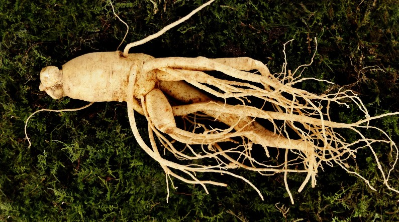
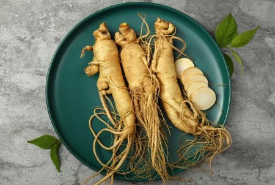

PHOTOS:


Botanical Name: Panax quinquefolius
Common name: Man-root
Planting "wild imitation" ginseng involves similar site preparation without tilling the soil. In most cases the ground cover of decaying leaves and humus is simply removed and the seeds are pushed into the soil, trampled down and then the leaf mulch is raked back. Ginseng roots are usually sold in the dried form as a traditional medicine that is thought to provide various benefits as an aphrodisiac, stimulant and anti-diabetes agent, as well as a treatment for sexual dysfunction in males. Ginseng may also be added to energy drinks, herbal teas, hair tonics and cosmetic products. American ginseng is a native perennial herb and an important forest crop. It grows on well-drained, rich soils under northern hardwoods. The root lives for many years, even though the stem and foliage die back to ground level at the end of each growing season.